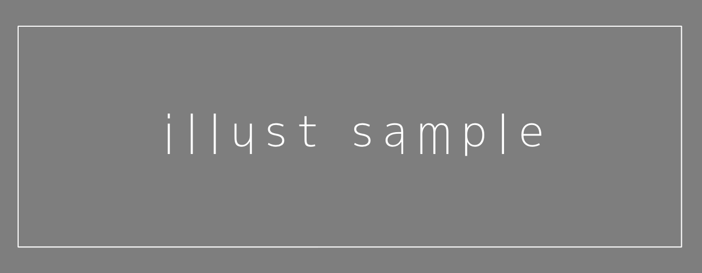

昨日、親友が事故に遭っていた。
病院に運ばれた時にはもう、息はなかったそうだ。
原因は運転手のながら運転らしい。スマホ見ながら運転してたら信号に気づかず、横断歩道を渡っていた親友を・・・。

ふざけんな！なんで、おかしいでしょ。浅はかすぎるでしょ。なんで・・・車は凶器だって解りきってるじゃないか。乗るからには責任とかさ・・・運転中にスマホなんて、こうなるかもって想像できなかったのか！？
いや・・・これに関しては人に言えないか。自分だって想像できなくて、怠惰に甘えて、結果後悔している。度合いが違うにしても、己のせいで取返しのつかないことになっているのは同じだ。
取り返し・・・もう親友と話せないのか？遊べないのか？
あの、好きなことになると止まらなくなる早口も、節々にネット用語らしきものが混じってて伝わりずらい口調も、未だに名前覚えられない親友が歌う曲も、もう聞けないのか？親友の笑った顔も、見れないのか？
それは嫌だ。心に穴が開いたみたいで苦しい。つまんないとか、ちょっとうざいとか、一時期避けてた時もあった。けど、やっぱり、自分の中で親友は大きな存在だったんだ。どんなに嫌な部分があったとしても、自分の中で親友という価値は変わらなかったんだ。失って気付くなんてしたくなかった。
自分なら取り返せる。ロードして、事故に遭うのを阻止することができるかもしれない。でも、ロード回数は最後の１回。もしこの先何か取り返しのつかないことが起きたら。もし、就活に失敗したら・・・。
本当に事故に遭うのを阻止できるかもわからない。最後の貴重な１回を、自分の為に使わないなんて。でもっ・・・。